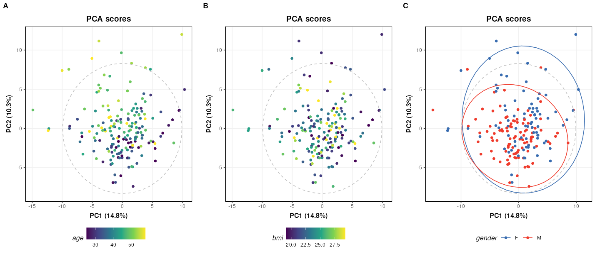
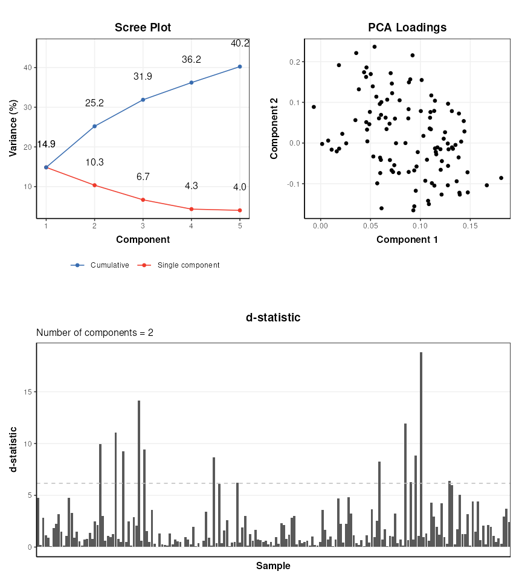
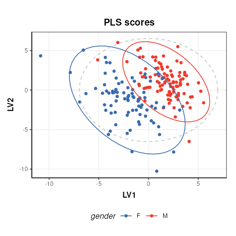
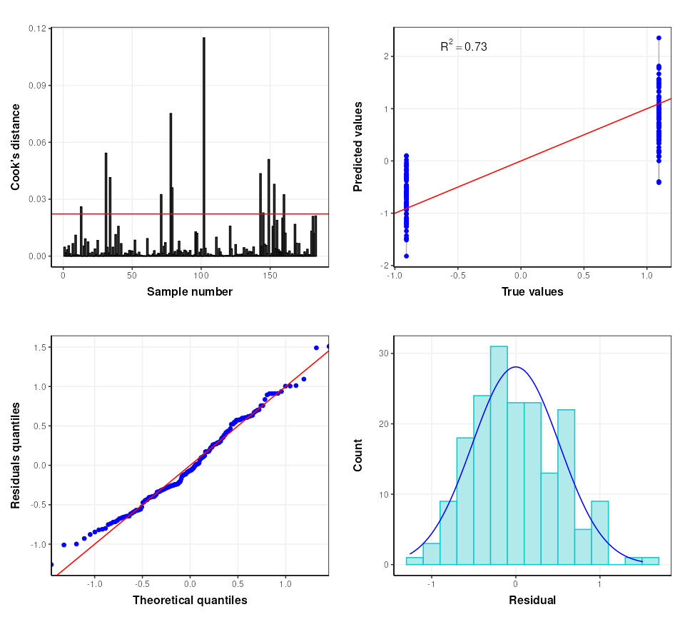
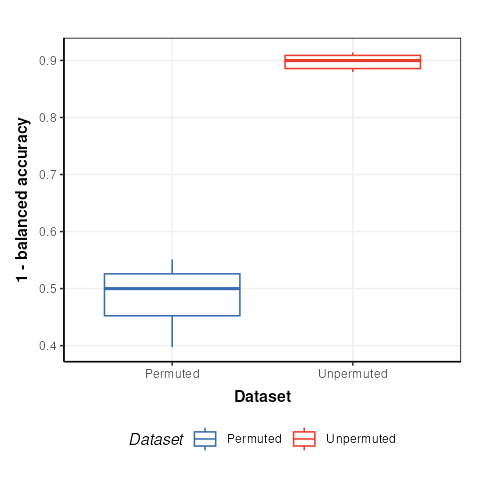

Partial Least Squares (PLS) analysis of a untargeted LC-MS-based clinical metabolomics dataset.
Gavin R Lloyd
Phenome Centre Birmingham, University of Birmingham, UKg.r.lloyd@bham.ac.uk
Andris Jankevics
Phenome Centre Birmingham, University of Birmingham, UKa.jankevics@bham.ac.uk
Ralf J Weber
Phenome Centre Birmingham, University of Birmingham, UKr.j.weber@bham.ac.uk
2026-04-16
Source:vignettes/articles/pls_clinical_lcms.Rmd
pls_clinical_lcms.RmdIntroduction
The aim of this vignette is to demonstrate how to 1) apply and validate Partial Least Squares (PLS) analysis using the structToolbox, 2) reproduce statistical analysis in Thevenot et al. (2015) and 3. compare different implementations of PLS.
Dataset
The objective of the original study was to:
…study the influence of age, body mass index (bmi), and gender on metabolite concentrations in urine, by analysing 183 samples from a cohort of adults with liquid chromatography coupled to high-resolution mass spectrometry.
The “Sacurine” dataset needs to be converted to a
DatasetExperiment object. The ropls
package provides the data as a list containing a
dataMatrix, sampleMetadata and
variableMetadata.
data('sacurine',package = 'ropls')
# the 'sacurine' list should now be available
# move the annotations to a new column and rename the features by index to avoid issues
# later when data.frames get transposed and names get checked/changed
sacurine$variableMetadata$annotation=rownames(sacurine$variableMetadata)
rownames(sacurine$variableMetadata)=1:nrow(sacurine$variableMetadata)
colnames(sacurine$dataMatrix)=1:ncol(sacurine$dataMatrix)
# create DatasetExperiment
DE = DatasetExperiment(data = data.frame(sacurine$dataMatrix),
sample_meta = sacurine$sampleMetadata,
variable_meta = sacurine$variableMetadata,
name = 'Sacurine data',
description = 'See ropls package documentation for details')
# print summary
DE## A "DatasetExperiment" object
## ----------------------------
## name: Sacurine data
## description: See ropls package documentation for details
## data: 183 rows x 109 columns
## sample_meta: 183 rows x 3 columns
## variable_meta: 109 rows x 4 columnsData preprocessing
The Sacurine dataset used within this vignette has already been pre-processed:
After signal drift and batch effect correction of intensities, each urine profile was normalized to the osmolality of the sample. Finally, the data were log10 transformed.
Exploratory data analysis
Since the data has already been processed the data can be visualised
using Principal Component Analysis (PCA) without further pre-processing.
The ropls package automatically applies unit variance
scaling (autoscaling) by default. The same approach is applied here.
# prepare model sequence
M = autoscale() + PCA(number_components = 5)
# apply model sequence to dataset
M = model_apply(M,DE)
# pca scores plots
g=list()
for (k in colnames(DE$sample_meta)) {
C = pca_scores_plot(factor_name = k)
g[[k]] = chart_plot(C,M[2])
}
# plot using cowplot
plot_grid(plotlist=g, nrow=1, align='vh', labels=c('A','B','C'))
The third plot coloured by gender (C) is identical to Figure 2 of the
ropls
package vignette. The structToolbox package provides a
range of PCA-related diagnostic plots, including D-statistic, scree, and
loadings plots. These plots can be used to further explore the variance
of the data.
C = pca_scree_plot()
g1 = chart_plot(C,M[2])
C = pca_loadings_plot()
g2 = chart_plot(C,M[2])
C = pca_dstat_plot(alpha=0.95)
g3 = chart_plot(C,M[2])
p1=plot_grid(plotlist = list(g1,g2),align='h',nrow=1,axis='b')
p2=plot_grid(plotlist = list(g3),nrow=1)
plot_grid(p1,p2,nrow=2)
Partial Least Squares (PLS) analysis
The ropls package uses its own implementation of the
(O)PLS algorithms. structToolbox uses the pls
package, so it is interesting to compare the outputs from both
approaches. For simplicity only the scores plots are compared.
# prepare model sequence
M = autoscale() + PLSDA(factor_name='gender')
M = model_apply(M,DE)
C = pls_scores_plot(factor_name = 'gender')
chart_plot(C,M[2])
The plot is similar to fig.3 of the ropls
vignette. Differences are due to inverted LV axes, a common occurrence
with the NIPALS algorithm (used by both structToolbox and
ropls) which depends on how the algorithm is
initialised.
To compare the R2 values for the model in structToolbox we have to use a regression model, instead of a discriminant model. For this we convert the gender factor to a numeric variable before applying the model.
# convert gender to numeric
DE$sample_meta$gender=as.numeric(DE$sample_meta$gender)
# models sequence
M = autoscale(mode='both') + PLSR(factor_name='gender',number_components=3)
M = model_apply(M,DE)
# some diagnostic charts
C = plsr_cook_dist()
g1 = chart_plot(C,M[2])
C = plsr_prediction_plot()
g2 = chart_plot(C,M[2])
C = plsr_qq_plot()
g3 = chart_plot(C,M[2])
C = plsr_residual_hist()
g4 = chart_plot(C,M[2])
plot_grid(plotlist = list(g1,g2,g3,g4), nrow=2,align='vh')
The ropls package automatically applies cross-validation
to asses the performance of the PLSDA model. In
structToolbox this is applied separately to give more
control over the approach used if desired. The default cross-validation
used by the ropls package is 7-fold cross-validation and we
replicate that here.
# model sequence
M = kfold_xval(folds=7, factor_name='gender') *
(autoscale(mode='both') + PLSR(factor_name='gender'))
M = run(M,DE,r_squared())Training set R2: 0.6975706 0.6798415 0.646671 0.6532914 0.7109769 0.670777 0.6935344
Test set Q2: 0.5460723
The validity of the model can further be assessed using permutation testing. For this we will return to a discriminant model.
# reset gender to original factor
DE$sample_meta$gender=sacurine$sampleMetadata$gender
# model sequence
M = permutation_test(number_of_permutations = 10, factor_name='gender') *
kfold_xval(folds=7,factor_name='gender') *
(autoscale() + PLSDA(factor_name='gender',number_components = 3))
M = run(M,DE,balanced_accuracy())
C = permutation_test_plot(style='boxplot')
chart_plot(C,M)+ylab('1 - balanced accuracy')
The permuted models have a balanced accuracy of around 50%, which is to be expected for a dataset with two groups. The unpermuted models have a balanced accuracy of around 90% and is therefore much better than might be expected to occur by chance.